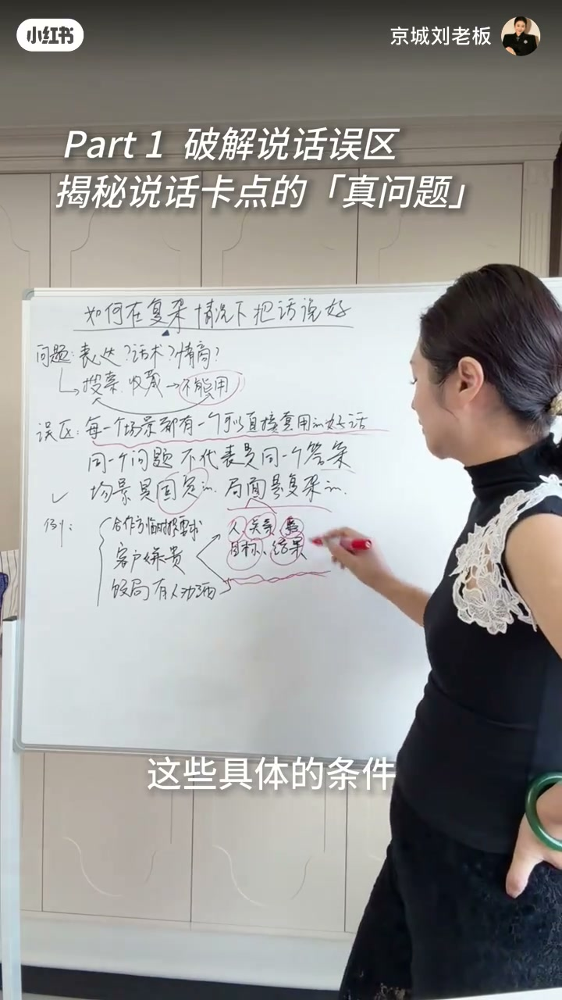
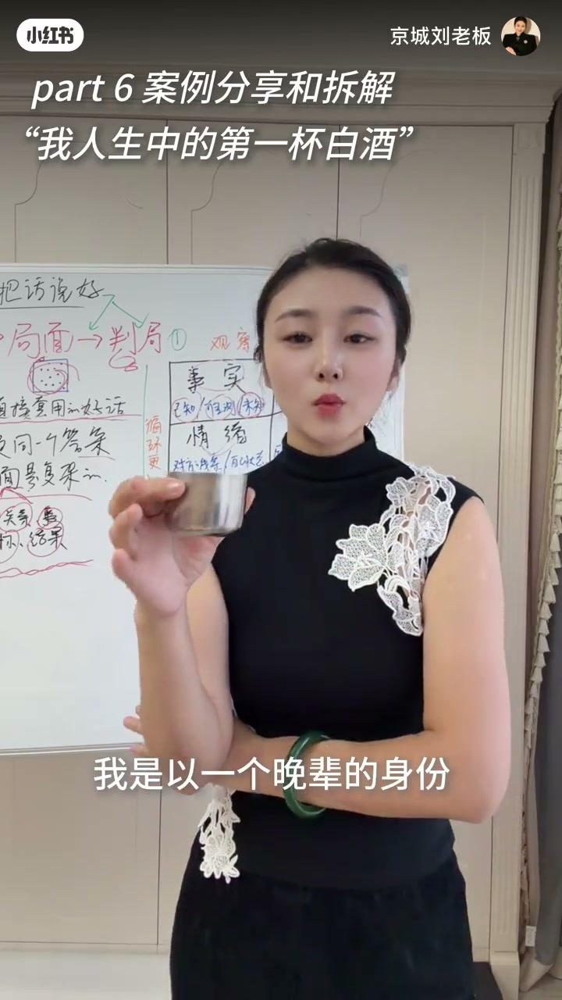

内容要点
「京城刘老板」用白板课讲复杂场合说话：卡点常被误诊为表达差/话术弱/情商低，于是狂搜高情商模板——收藏夹越满越说不出口。真正误区是以为每个场景都有可套用的「好话」；场景固定、局面复杂，需要拆事实、关系、情绪（白板亦强调人/关系/目标/结果）。中后段用投资饭局敬酒作案例。Whisper 中段有空洞与乱码，关键板书与可读口播已交叉核对；未听清处不臆造。
知识结构
遇说话难题先怪表达/话术/情商，然后全网收藏模板，现实仍说不出口。
不排斥话术，但久之会以为每场景都有可直接套用的好话；同一问题≠同一答案。
白板示例：合作方临时提要求、客户嫌贵、饭局劝酒 → 盯人/关系/目标/结果。
已知 / 据此推测 / 还需确认，分开看，避免把猜测当事实。
在场与不在场决策人、利益与角色；敬酒：戒酒前辈临时破例时局面已变。
少背句子，多判局：先分清事实层级与人际结构，再开口。话术是润色工具，不是局面替代品。
00:00-02:30收藏夹满了，还是开不了口
开场承诺用一条视频讲清复杂场合说话经验，目标是抓住机会、赚到本属于你的钱。作者指出常见第一反应：怀疑表达能力、话术不够、甚至情商不高，于是搜索高情商话术、记模板、看到「说得对」就收藏。
回到现实却用不出去——话术太硬、不适合当下自己、说不出口——于是再收藏一轮。作者并不排斥「缩图话术」（整理话术）能让表达更得体，但久而久之会陷入误区：以为每一个场景都有一句可以直接套用的好话。现实不可用已经证明：同一个问题，不代表有同一个答案。
02:00-06:30场景固定，局面复杂
白板标题「如何在复杂情况下把话说好」把问题从「表达？话术？情商？」箭头指向「搜索、收录 → 不能用」。误区被红笔标出：每一个场景都有一个可以直接套用的好话。例题列出合作方临时提要求、客户嫌贵、饭局有人劝酒，右侧圈出人、关系、目标、结果——说话前要看清这些具体条件。
口播侧补充「看事实」的三件事：我们已经知道的、我据此推测的、我还需要确认的。合作方临提要求时，对方说过什么是已知，接下来怎么做、合伙人是否知情、还缺什么条件，往往仍不清楚——把三层混在一起，就容易套错话术。

06:30-11:06关系、情绪与敬酒案例
第二块是关系：这次交流涉及哪些人，包括没在场但会参与决定或受影响的人；角色、关联、利益、各自能决定什么。第三块是情绪——口播与行为要对照着看。Whisper 中段有缺失，但板书框架与后段案例足以支撑主线。
案例：主咖是投资圈老前辈，在座多为头部基金创始人，作者以晚辈身份参加。本人从不喝白酒，平常敬酒会直接说明习惯；但当天老前辈已戒酒很久，因难得相聚高兴决定喝几杯，其他平常不喝的前辈也跟着端杯——局面已变，旧话术「我从不喝」是否仍合适，取决于你如何判关系与目标。转录在约 11 分后截断，后约 3–4 分钟以画面延续，不臆补口播。

完整转录（73段）
以下文本由 Whisper medium 模型自动转录，可能存在少量识别误差，已尽可能修正。
一条视频讲清楚如何在�杂杂�
复杂场合的一些如何说话的经验
分享给大家
帮助大家解决说话的问题
从而抓住原本属于你的机会
赚到原本属于你的钱
通常我们遇到说话问题的时候
第一反应都是怀疑自己的表达能力不好
或者说话术不够强
甚至怀疑自己的情商不高
于是开始全网搜索各种高情商话术
计各种模板
看到某一句话说的特别对
或者看到某一个博主说的特别好
就开始收藏
可回到现实当中的时候
发现它还是不能用
要么你觉得话术太硬
要么觉得不太适合当下的自己
总觉得哪哪都不对
反正就是说不出口
于是又开始新一轮的各种收藏
收藏更多的话术和模板
等到收藏家满满当当你准备调用的时候
发现在现实当中你依然还是开不了口
我其实不排斥缩图话术这种行为
因为它确实能够让你表达得更得体更清晰
但是长此以往久而久之会让你陷入一个误区
那就是你会觉得在每一个场景
都有一个可以直接套用的好话
但现实的不可用已经证明了同一个问题
不代表有同一个答案
因为场景是固定的
是固定的但局面是�杂的
我举个例子同样是合作方临提
他说过这句话是我们知道的
但他接下来会怎么做
回去商量什么
合伙人知不知道这件事情
还需要哪些条件
现在都不一定清楚
所以看事实的时候要分开三件事
我们已经知道的和我据此推测的
以及我还需要确认的
第二个是关系
关系这一点你考虑的也比较多
比如说这次交流设计哪些人
包括没在场
但是会参与决定或者受到影响的人
他们都是什么角色
彼此有什么关联
关系怎么样
他们之间又有什么利益
各自能决定什么
第三个是情绪情绪
根据原话和行为和
.o
主咖是一个投资圈的老前辈
在座其他几位也是头部基金的创始人
我是以一个晚辈的身份参加的
在此之前我们几位也是有过几次小聚的
我本人是从来不喝白酒的
平常遇到敬酒
我一般会直接说明个人的习惯
但当天到了现场
我发现这次的情况和之前不太一样
这位老前辈他已经明确说了
他已经戒酒很久了
因为大家难得相聚了心里高兴
所以他决定喝几杯
在场其他几位前辈
他几位前辈子平常也有不喝酒的
当天也是跟著一起端的一起端的一起端的一起